During this semester-long project, I built a cycle-accurate RISC-V simulator using the CodAL language. Unfortunately,
I had to sign an NDA to use this software, so the code is unavailable. However, much of the processor's overall architecture can be
reviewed.
A significant feature of this simulator is that it is cycle-accurate. Modern CPUs can process more than one instruction at a
time, which increases instruction throughput and reduces overall logic downtime. This is called pipelining and is done by splitting the CPU into different stages.
For example, if a processor has ten stages, it can actually work on ten instructions at once. In this case, my processor was split into
five stages: the fetch (IF), decode (ID), execute (EX), memory (ME), and writeback (WB) stages. Of course, pipelining increases the complexity of the processor, and many
features must be added to ensure that instructions are executed correctly. The main feature is called forwarding.
Forwarding is needed when the processor loads a value into a register, but that value is needed before it can actually be written to the processor's registers.
For example, take this section of code, assuming a pipelined processor is used:
addi x3, x2, 0x4
sw x6, 0(x3)
First, the immediate 0x4 is added to the value in register two, and this value is stored in register 3. Then, the value in x6 is stored in memory
at the location pointed to by register 3. In this case, once the first instruction is done adding 0x4 + x2, i.e. done in the execute stage, this value will
need to be forwarded back to the execute stage so the second instruction can store it in memory. In this case, the value from the first instruction will be in the
memory stage, and it will need to be forwarded to the second instruction in the execute stage. Values from the WB stage will also need to be forwarded back to the execute
stage, in case of instructions like:
addi x3, x2, 0x4
slt x7, x1, x23
sw x6, 0(x3)
If forwarding was not used, a significant amount of stalling would need to be applied, so that the processor could wait for data until it is ready. This would significantly impact performance
and instruction throughput.
Another feature of a pipelined processor is the pipeline registers. Between each stage, there are a set of registers that are updated each clock cycle of the CPU. These registers hold data that
should be passed from one stage to the adjacent stages. These essentially act as a buffer between each stage and ensure that data propagates correctly through the processor.
Before we can go over the schematic, its naming conventions must be understood. Anything beginning with s_ is a signal and is essentially a wire that carries data to another element in the processor. Anything beginning with r_ is a register and is used to store values in between processor cycles. If a signal begins with s_id_, it is in the decode stage, and if a register begins with r_id_, it is a pipeline register between the decode and fetch stage.
The first stage of the processor is responsible for fetching instructions from the instruction memory. As seen in the schematic below, the instruction pointed by r_pc is loaded into the instruction pipeline register (not pictured). Since instructions are aligned by four bytes, four is added to the previous program counter to get the next instruction. The mux is used when there is a branch, and the processor needs to load an instruction that is not the current pc + 4. As seen, this address is taken from the ME stage and is selected by a signal in the ME stage. 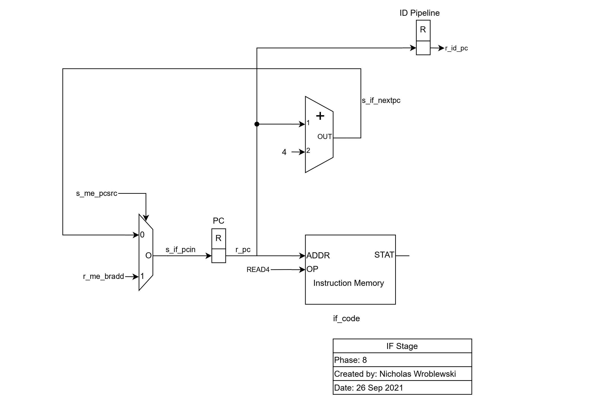
The decode stage is by far the most complex stage of the processor. In this stage, the 32-bit instruction is parsed, generating various values for the processor.
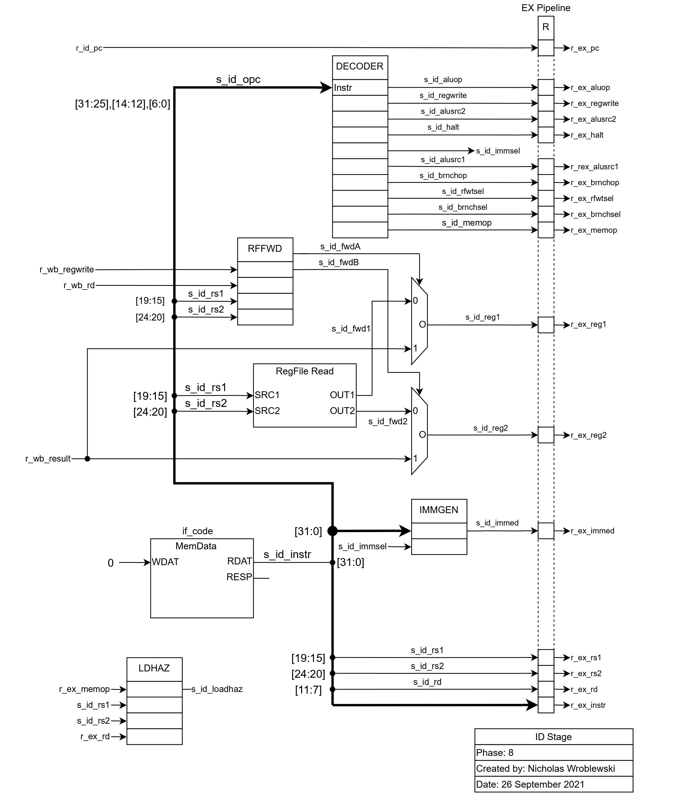
The decode block does the following, based on the 17-bit OPC value in the instruction register:
beq or bne.
The RFFWD block dictates if the value to be written back to the register in the WB stage should be forwarded, or if the value in the register file should be used. It uses
rs1 and rs2 selected by the instruction, along with regwrite and the destination register, both in the WB stage, to make this decision. Next, the immediate is grabbed from the instruction,
based on the instruction type indicated by s_id_immsel.
Finally, the LDHAZ block generates the s_id_loadhaz signal, which is set to true if the processor needs to stall for memory access.
The execute stage is where most of the work is done. Here, the ALU is responsible for executing the instruction.
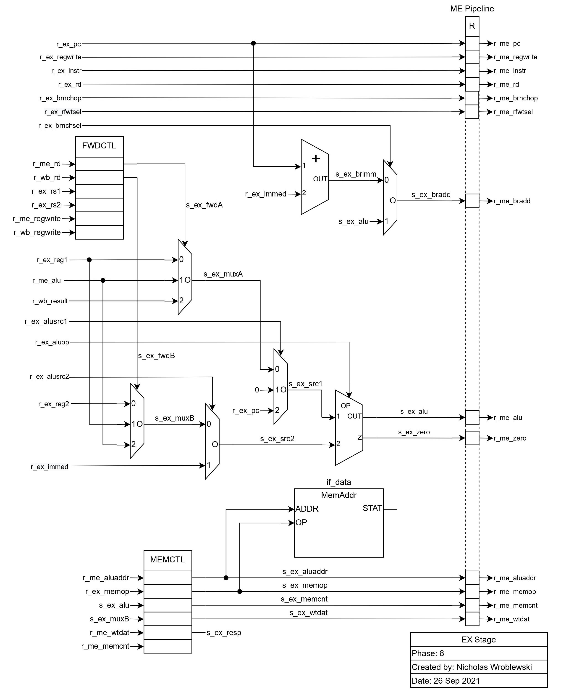
The FWDCTL block selects which source should be used for each of the ALU inputs, if it should be from the register file,
the previous ALU result, or the result that is about to be written to the register file. The ALU's first source is chosen
between this selection, zero, and the current PC. The ALU's second source is chosen
between this selected value and the immediate value.
r_me_bradd is the branch address, used in the fetch stage. Based on r_ex_brnchsel, r_me_bradd is
either the result from the ALU, or the current PC plus the immediate.
The memory section at the bottom of this stage's schematic handles the input to memory. Using a Mealy state machine, the address, memory operation, and data to be written,
data is read and written to memory. Data read from memory is available in the next stage.
In the memory stage, data is read from memory. Also, the next pc (pc + 4 or bradd) is determined by the branch operation, and if the ALU's output is zero. In the case of a branch,
s_me_pcsrc is true.
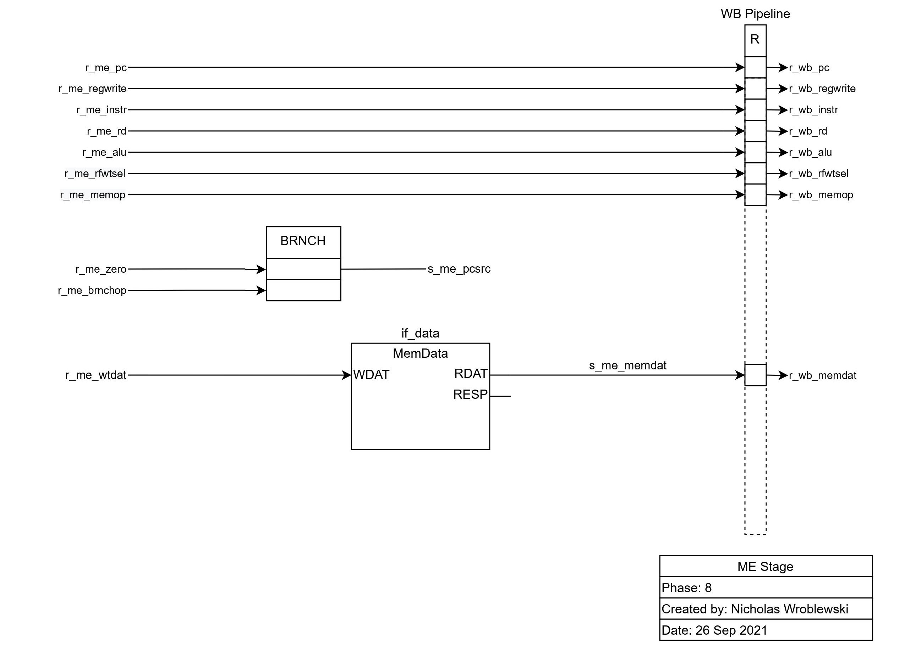
In the writeback stage, data is written back to the register file.
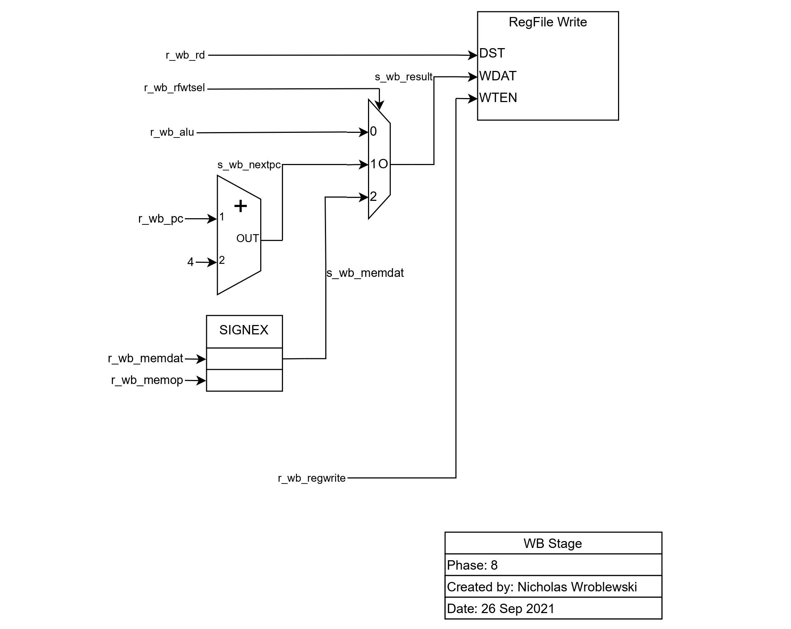
The destination register is selected by r_wb_rd, and the data written back can either be the ALU's result, the next PC, or the data from memory.
The SIGNEX block sign extends the data from memory if applicable.
In this lab, I desinged and assembled a sensor shield that is compatable with Arduino Unos. This shield has a heartbeat sensor, Hall effect sensor, gas sensor, temperature sensor, microphone, buzzer, RGB LEDs, an ADC, and a DAC. In the first stage of the design, I made a note sheet of how these parts would connect together, and any kind of supporting circuitry needed. Some of these parts will use the ADC to communicate with the Arduino, such as the temperature sensor, heartbeat sensor, and Hall sensor, since they output and analog signal. The next step was designing the schematic for the board.
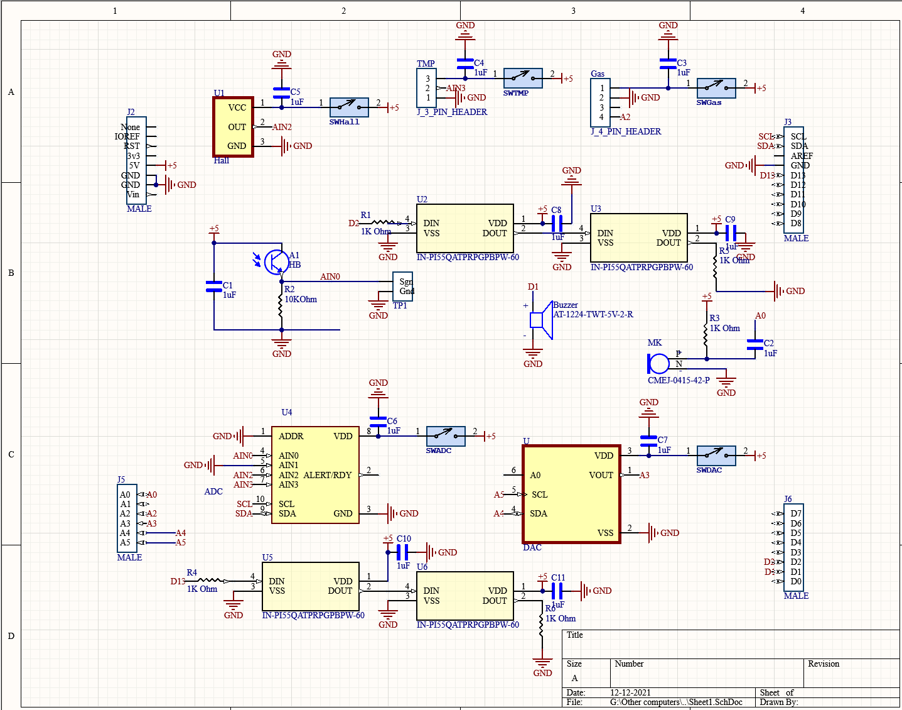Using my notesheet, I began by placing any of the major components. Most needed a decoupling capacitor, and as seen, all subsystems apart from the LEDs have isolation switches which will be helpful in case of debuging. The heartbeat sensor uses a phototransistor in a low-pass circuit, along with two of the RGB LEDs to supply a red light source. A high-pass filter was added, along with the microphone's internal low-pass filter, to make a bandpass filter that passes frequencies within the range of human voices. After this, I began the layout.
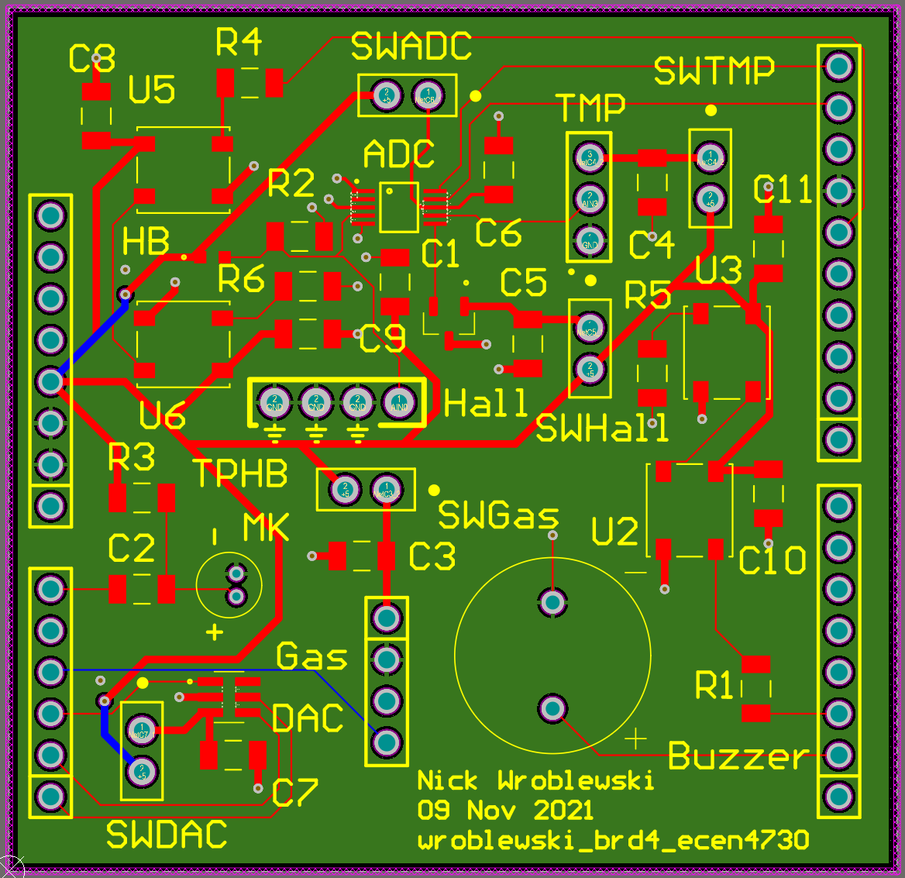I tried to make this design as compact as possible so that it fit between the pinheaders of a standard Arduino Uno. I began by arranging all of the parts, and slowly detangled as many nets as I could. After this was done, I then routed all of the signals, and then 5V from the Arduino. The Arduino Uno only has One 5V pin, so routing this line was somewhat difficult. I usually begin layout by placing my power rails and thten signals, however I found that it was much more helpful to place signal paths first. Because this is a four layer board, anytime there is a via, an adjacent return via was placed to reduce cavity noise crosstalk. Although both the ADC and DAC use I2C to communicate with the Aruino, I was able to separate these ICs since I2C from the Arduino is connected to both A5 and A6, along with its dedicated pins. Once the layout was done, I sent my design to JLC for manufacture.
For this design, students were asked to hand assemble all parts to the board. For the most part this was easy since the majority of parts are either through-hole or large SMD parts. I did have significant trouble with the ADC, since I had to use a hot-air gun due to its small pad size. After a number of attempts and a half-broken pad, all of the ADC's pins were secured on the board.
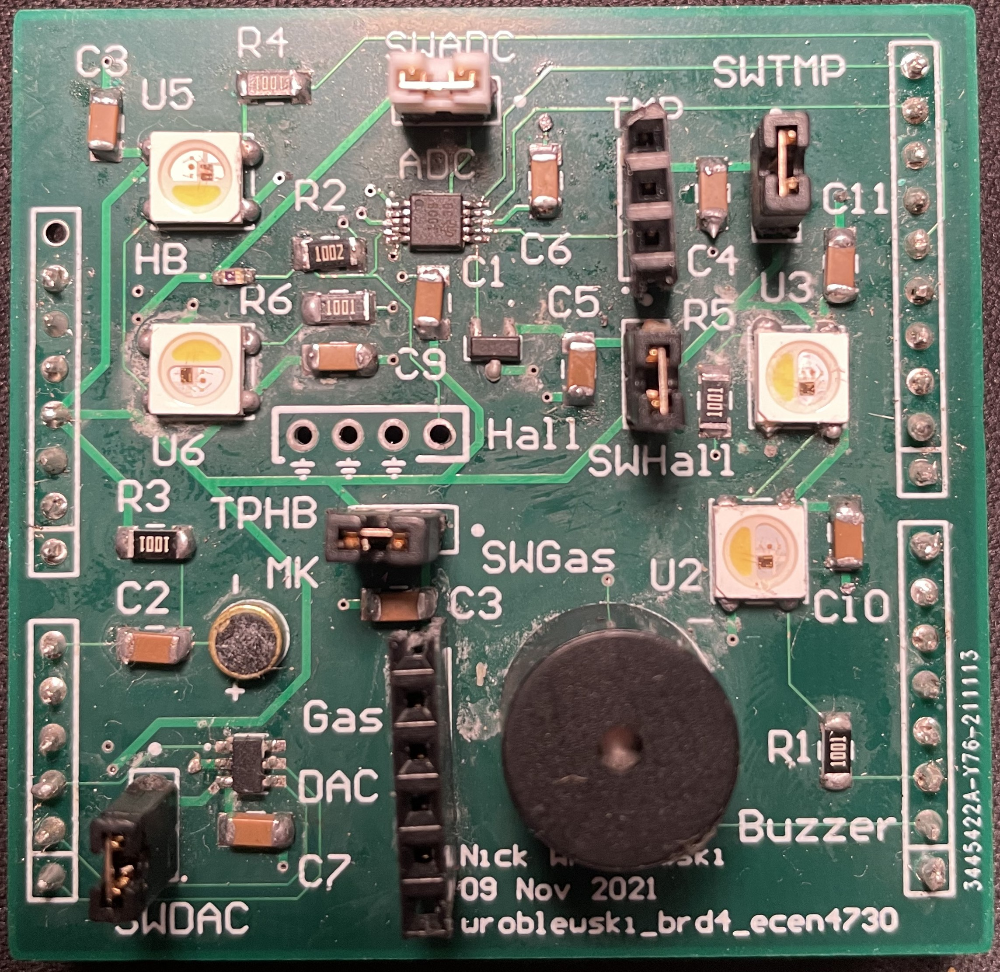To test the board, I used various Arduino code samples with some slight modifications. One quirk of this design is that because the buzzer is connected to the TX pin, anytime the board is flashed it emits a garbled mess of static. I have a strong feeling that my ADC is broken, because whenever the Arduino tries to access the ADC object the board stops execution, making heartbeat, temperature, and magnetic sensing impossible. I did verify that the heartbeat circuit was functional with the use of the test probe. On an oscilloscope, the phototransistor's emitter had a notable voltage rise and fall, which matched my heartbeat. Fortunately, all of the other subsystems of the board worked!

This post is the culmination of a semester-long project, wherein a VGA controller with 720p & 1080p resolutions was constructed using the DE10 Standard FPGA.
The first step in this project was to implement the signal timings for horizontal and vertical sync pulses. Based on these timings,
the monitor can determine the number of pixels on the horizontal and the vertical. Using the diagram below, these timings can be
modularly coded in Verilog. Modularity allows for resolution switching between 1080p and 720p (and any other standard resolutions)
by simply changing parameters.
Within the Verilog code, each frame started by displaying the pixels, and then moved on to the front porch, sync pulse, and finally the back porch. This method
allowed for straightforward coding. After this step was completed, the monitor recognized the 1280 by 720 pixel resolution, but no colors were being written
to the display. Anding the horizontal counter with base two numbers allowed for simple color bars to be displayed.
Part two required an expansion of the pixel generator, where two colored boxes will be displayed. The horizontal and vertical position of the boxes was controlled
by switches on the DE10 Standard, along with the color of the boxes. A one bit wide logic element determined if each box should be displayed, and was enabled if the
horizontal and vertical counters are in the box's display area. Overflow was also programmed, so if the box went off screen, it would reappear on the other edge of
the display.

Part three added 1080p to the video controller. As previously mentioned, modular Verilog allowed easy switching between 1080p and 720p resolutions. A new
phase lock loop had to be generated for the 1080p's 148.5 MHz clock.
Part four is the first time images will be displayed. Using the DE10 Standard's onboard ROM, images could be constructed into a MIF file in MATLAB, and then
uploaded to the board's ROM. Since the board's ROM is not large enough for all 22,118,400 bits of a 24 bit 720p display, the images had to be scaled by a factor
of four. Fortunately, the horizontal and vertical counter's value could be shifted right two bits for integer division by four, allowing for simple and
synthesizable Verilog code. I used a photo of my dog to test it out.
In this final project, students were asked to create different implementations
for a mockup medical company. In part A, two databases were constructed, a doubly linked list
and a hash table. In part B, two sorting algorithms were implemented: bubble sort and heap sort.
In both parts, the efficiency of the algorithms will be analyzed and compared.
For this part, search and insert times were compared for both methods.
Shown below is the insert times for the doubly linked list and the hash table.

As seen, both insert times are comparable. The doubly linked list inserts the new node at the head of the list, so inserting is quick, with complexity O(1). The doubly linked list’s increased insert time is most likely due to the fact that memory must be allocated when inserting a new node. Multiple collisions while inserting an element in the hash table causes the spikes in insert times. On average, hash table insertions have complexity O(1), and O(n) in its worst case.
Shown below are the search times for both methods. Note the different time scales.

As for search times, the hash table exceeds the doubly linked list. This is because the doubly linked list must look at every node and check if the key matches the searched value, giving it complexity O(n). The hash table’s array implementation allows the data to be accessed in constant time when no probing occurs. On average, search times are O(1), and O(n) in the worst case. Delayed search times for the hash table occur when there are multiple collisions while probing.
Shown below are the timings for bubble sort and heap sort. Note the different time scales.
Heap sort has vastly superior sorting times compared to bubble sort. This is because heap sort only operates on the affected sub-trees, giving it time complexity O(n ∗ log(n)). Bubble sort has complexity of O(n2). On the first iteration, the largest value is sent to the nth index. On the second iteration, the second largest value is sent to the n − 1 index. This process is repeated n times for all contents of the array. This results in a time complexity of O(n2). One disadvantage of heap sort is that the data is not perfectly sorted, however with bubble sort the data is perfectly sorted.
Part A: Overall, the hash table is more applicable for the database application. The hash table has far
superior searching times compared to the doubly linked list. As the number of keys in the database increases,
the search performance of the doubly linked list lessens, with complexity O(n). Compare that to the hash
table, where the time complexity for searching stays at O(1) on average.
Part B: For the sorting part of this project, heap sort is faster, however it does not perfectly sort all of the
data. With time complexity O(n ∗ log(n)), it vastly out performs bubble sort’s complexity of O(n2). One
advantage of bubble sort is that all of the data is in perfect order. Again, as the number of keys in the
database increases, bubble sort’s performance drastically reduces compared to heap sort.
In general, the chosen data structure depends on its operation. A doubly linked list might be more useful
than a hash table for a given application, and one sorting algorithm might be chosen over another based
on the use case. Knowing which structure to use for a given program is extremely important for efficient
algorithms.
This post is a combination of two separate labs carried out on the Pearl Gecko 12. First, an I2C driver was created for communication with an onboard temperature sensor, and then a LEUART driver was created for communication with a bluetooth module. Both drivers necessitated intimate use of the Pearl Gecko's reference manual, hardware abstraction layer, and datasheets of the Si7021 temperature sensor and the HM-10 Bluetooth module.
Both implementations used a state machine, interrupts, and a process scheduler. These methods allowed for high energy efficiency, consuming tens of micro-Amps of current.
Shown below is the Si7021's sequence to perform either a temperature or humidity measurement. A software flowchart was created to better visualize the datasheet's I2C bus communication sequence.
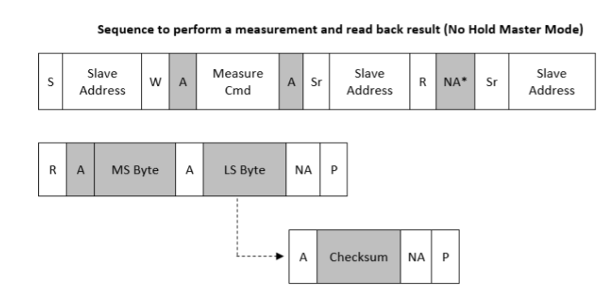The flowchart shown below illustrates how the driver communicates with the Si7021 slave and the necessary interrupts and states.

The microcontroller starts out by unblocking sleep mode. A major focus of this class is to implement software with low energy consumption, on the order of tens of micro-Amps. Because of this, the microcontroller could run off of a compact battery for months.
After exiting sleep mode, the Pearl Gecko sends the address of the Si7021 slave on the bus and waits for an acknowledgement. Then the Pearl's state changes to measure, where it will next send a measure command to the slave. The slave will acknowledge the measure command, and then then the Pearl Gecko will enter the next state where it will send the slave's address on the bus along with a read command. Once an ACK is received, the Pearl Gecko enters the next state where it gets the most significant byte on the bus. The Pearl Gecko will send an ACK to the sensor, and then get the least significant byte of data. Once the lease significant byte is received the Pearl Gecko completes the I2C process.
At the end of this I2C program, sleep mode is re-enabled.
Like the I2C driver, a flowchart was first made to refine the software implementation process.
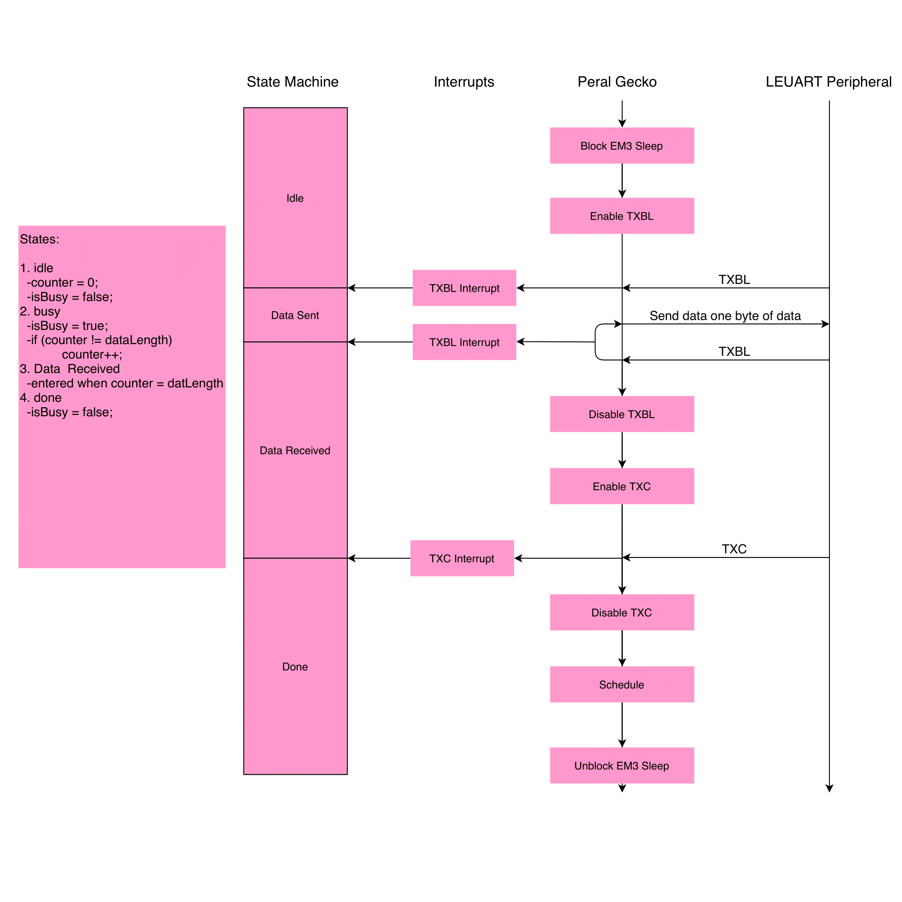First, the Pearl Gecko exits sleep mode and enables the TXBL interrupt. This interrupt allows the microcontroller to watch for when the UART bus is ready for data transmission. Eventually, the master receives a TXBL interrupt from the slave, and the microcontroller enters the dataSent state. Then the Pearl Gecko sends on byte of data on the bus until the TXBL interrupt is received again. Then the state is updated to dataReceived and the TXBL interrupt is disabled. The TXC interrupt is enabled, which is true when there is no more data in the transmit shift register. Once the master receives the TXC interrupt from the slave, the driver wraps up by disabling the TXC interrupt, scheduling the LEUART function, and unblocking sleep mode.
The primary method of validation is within the test driven development that was used throughout the creation of these labs. Unfortunately, this process is very grueling, so I don't feel like writing about it!
As shown below, the microcontroller consumes micro-Amps while in sleep mode, and bumps up to sub-milli-Amps while the microcontroller is using LEUART or I2C.
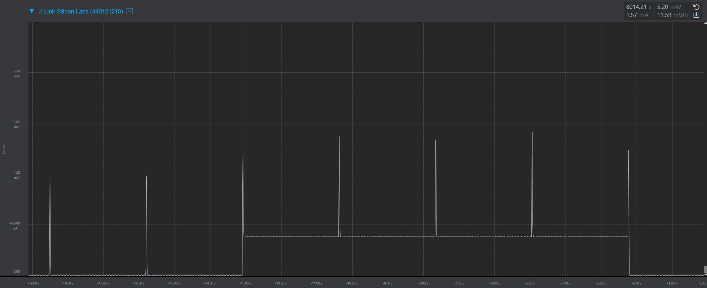The large spikes in current are when LEUART is on, and the small spikes are when I2C is on. The large hump of current in the middle of the display is from an onboard LED, which turns on when the temperature is above 80 F.
Below is from a phone connected to the Bluetooth module. The driver starts out by displaying a "Hello World" and then some other particulars. The temperature is sent every 2.7 seconds on the LEUART bus. My room sure is toasty!
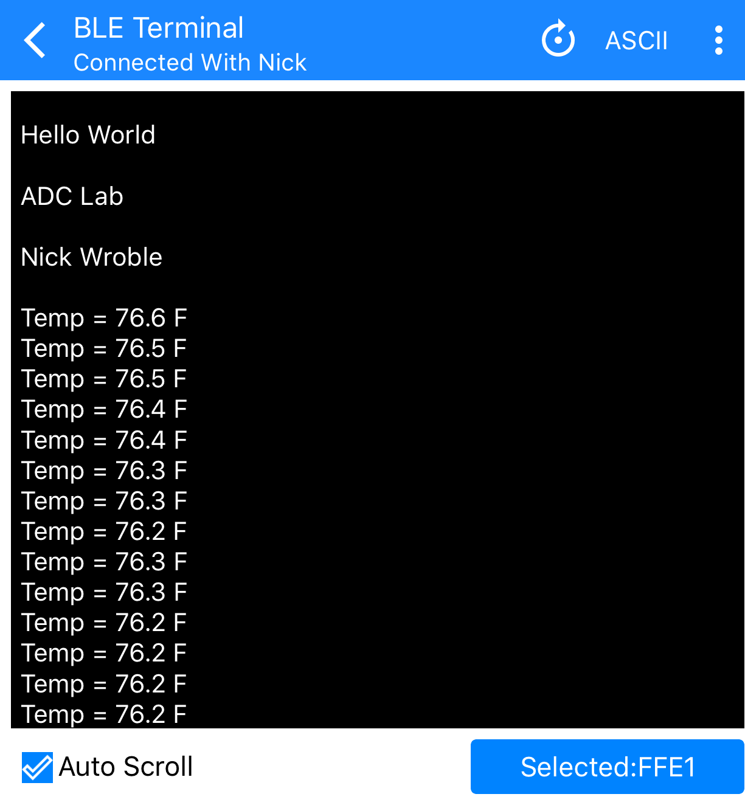
In this lab, a 1965 Ford Thunderbird’s taillight behavior was emulated using the
Altera DE10-Lite FPGA. Brake light behavior will not be emulated.
The left turn signal will use LEDR[9:7], and the right turn signal will use LEDR[2:0].
LEDR[6:3] will be off all the time. This emulator will include a hazard light mode, in which all
lights of the left and right turn signal LEDs will blink simultaneously. One thing to note is that
hazard mode will have priority over the turn signal behavior. HEX0 will display the current state
of the machine, in that L, R, and H will be displayed depending on the current state. SW[0] will
enable the turn signals and SW[1] will turn on the hazard lights. If neither of these switches are
turned on, all LEDs will be off, and HEX0 will display a blank screen. KEY[0] will be a latched
system reset that changes based on the negedge of the pushbutton. KEY[1] will be another latch,
except it will toggle between the left and right turn signals.
To validate the results on our board, a testbench was created, and the output was captured
using GTKWave. The following GTKWave capture shows this testbench in action.
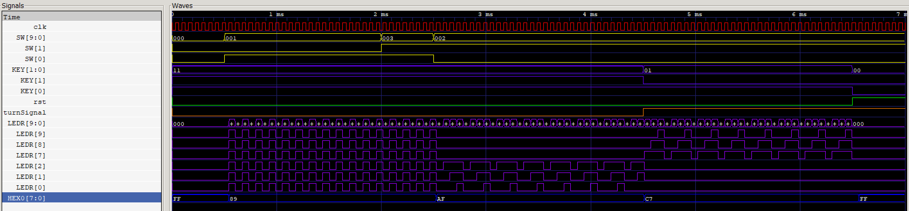
At 0 ms, KEY[1:0] are initialized to 1 as their latches watch for the negedge. SW[9:0] are
also set to 0. At 0.5 ms, SW[0] is turned on, sending the device into hazard mode. HEX0 updates
to display H, and the LEDs can be seen switching on and off on the posedge of the clock. At 2 ms,
SW[1] is turned on, and nothing changes. This is meant to demonstrate that hazard mode has
priority over turn signal mode. At 2.5 ms, SW[0] is turned off, sending it into right turn signal
mode. LEDR[2:0] can be seen switching on and off, and HEX0 is updated to display ‘R.’ At 4.5
ms, KEY[1] is pressed, toggling turnSignal and sending the device into left turn signal mode.
LEDR[9:7] can be seen switching and HEX0 changes to ‘r.’ At 6.5 ms, KEY[0] is sent low which
enables reset and disables the LEDs and HEX0.
Verilog code and a testbench can be found on my GitHub
In this lab, we created transistors using various chemicals. Unfortunately, photos of the
process are unavailable since a majority of the OCET was built in a cleanroom. First, a sheet of
glass was cleaned using ethanol. It was then taken into a clean room, and spin-coated with PDOT: PSS.
This organic material will act as the semiconducting material for the OECT. The PDOT is baked onto the glass with a hot plate.
Using Kapton tape, a stencil for the gate and drain connections are created, and a silver paste is applied to the stencil.
The tape is removed, and the silver paste is baked onto the glass. The channel between the two electrodes is then isolated by
scraping off the PDOT. A well for the gate electrode is created. A silicone well is made using PDMS, and this well will hold the
electrolyte for the gate. The PDMS well is placed across the gate and the drain, and the well is filled with saltwater. For the gate,
a pellet of Si/SICl pellet is soldered to a wire.
In this lab, students created a solar cell using readily made materials.
This exercise starts with two indium tin oxide (ITO) coated squares of glass. On the ITO sides, one square is coated with titanium oxide and the other is coated with carbon. The TiO₂ paste is spread out into a thin layer, as to prevent cracking in the next step.
The squares with TiO₂ are heated for ten minutes to adhere the paste to the glass.
The square is then placed in black cherry juice for ten minutes to allow the juice to absorb into the paste.
Excess juice is rinsed off using water and ethanol
After facing the two ITO sides against each other, the solar cell is complete. Because the ITO is conductive, an anode and cathode can be placed anywhere on the sheets of glass. This cell produced 10mW in ambient lab lighting.
TechLock is a smart lock system that integrates RFID and fingerprint sensing technology to secure valuables in a locked box. This design can
easily be modified for other various applications.
TechLock uses a self-made Arduino uno with a fingerprint sensor, RFID sensor, photoresistor, and servo. If the user uses his or her RFID
capable card and their fingerprint, the box unlocks due to the servo moving into the “open” position. Someone cannot use their fingerprint and
someone else’s card.
Currently, new users are added in the Arduino code, and I am interested in creating a system to add new users dynamically. After the user is finished placing or removing their valuables and close the box, the photoresistor detects that the box is closed and turns the servo to the “closed” position. Code can be found in my GitHub.
At the start of the game, a deck of cards from 0 to 51 is created. To get a random card and its value, a random number from zero to 51 is generated. It is then divided by 4, and the integer value is the value of the card. The suit name and value name are printed out by functions. Every time a card is taken from the deck, it is replaced by -1. This allows the program to easily check if a card was already drawn from the deck. The program automatically deals the player and the computer two cards and calculates the sum for both players. It then checks for a blackjack, and if there is not one, it continues the game. The user can then enter ‘hit’ or ‘stand.’ An invalid input continues the game, and asks the user to enter something valid. After the player is done, the computer plays until it busts or it beats the player. Code can be found on my GitHub.